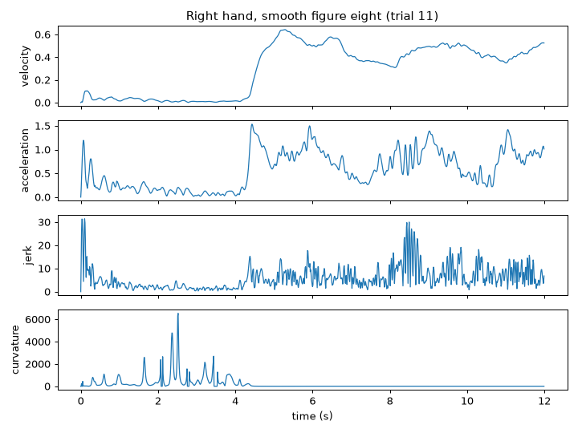
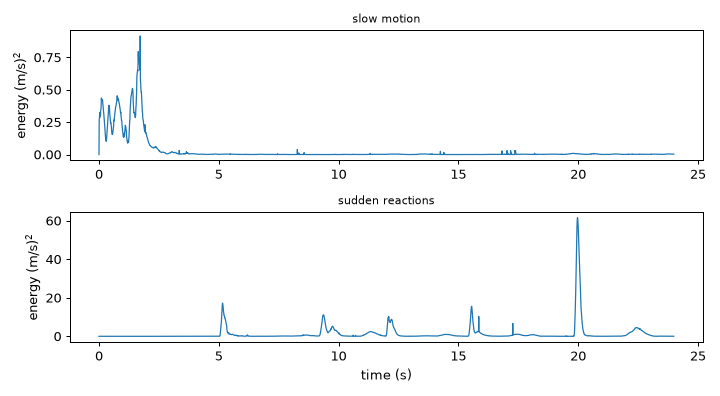
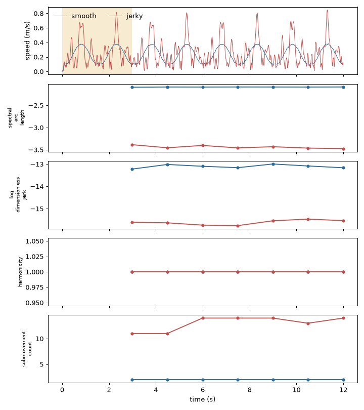
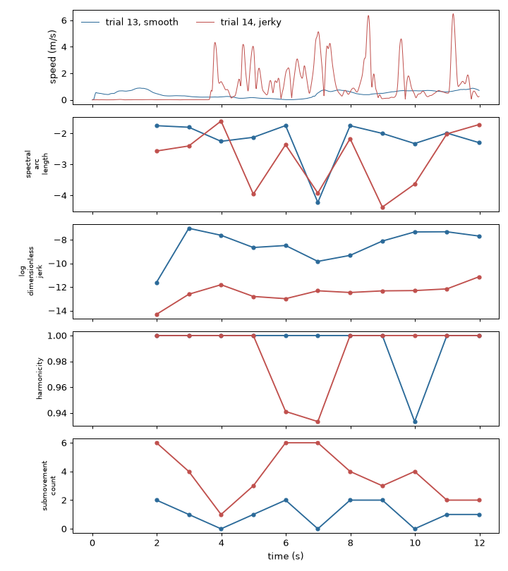
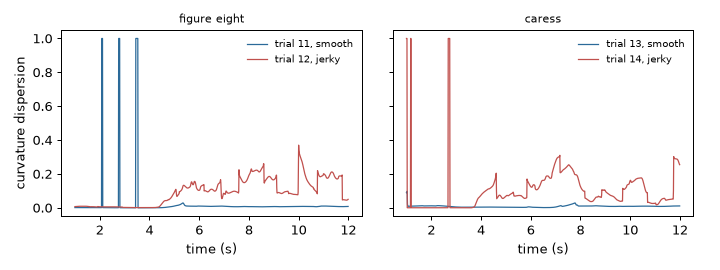
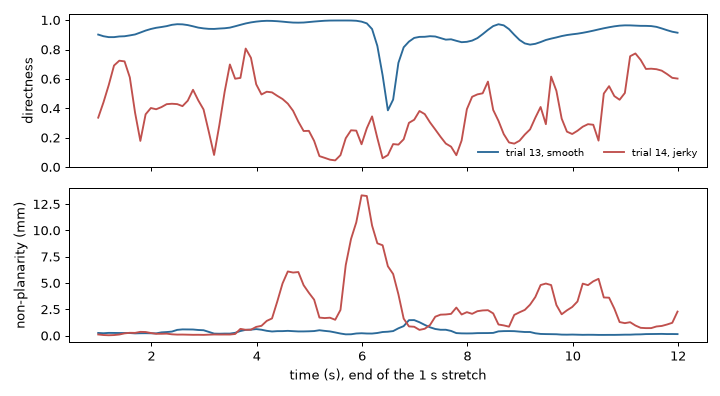
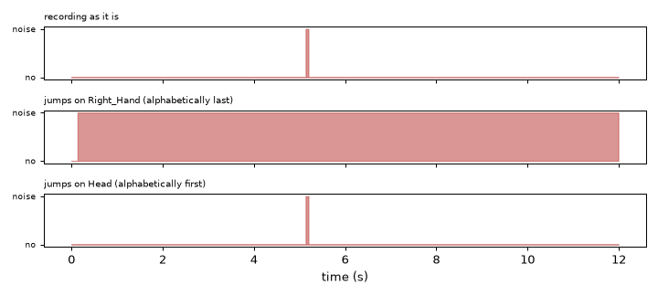

Note
Go to the end to download the full example code.
Low level: motion and smoothness#
How fast, how energetic and how smooth a movement is. This tutorial computes the velocity, acceleration, jerk and curvature of a hand, the kinetic energy of the whole body, six smoothness metrics (first on synthetic reaches whose smoothness we control, then on recordings), two shape measures of a path, and a test that tells a tracking error from a movement.
- Goals:
read the kinematics of a point; measure the energy of a skeleton; compare smoothness metrics on a smooth and a jerky movement; measure how direct and how flat a path is; flag noisy tracking.
- Prerequisites:
- Data:
synthetic reaches; trials 11 to 14 (figure eight and caress, smooth and not smooth), 21 (reactive hiding) and 25 (total body slow motion) of the example session, the first 12 to 24 seconds of each.
- Time:
about 30 minutes.
Data used in this tutorial#
The recordings are in millimetres; we convert them to metres, the unit that the features expect by default. Time is in seconds and every recording was made at 100 samples per second. Trial 11 is a figure eight drawn in the air with the right hand, in a smooth way; trial 12 is the same task made in a jerky way.
import matplotlib.pyplot as plt
import numpy as np
from helpers import plot_recorder, shade_status
from pyeyesweb.datasets import load_qualisys_trial
RATE = 100.0 # samples per second of every recording
smooth_eight = load_qualisys_trial(11, start=0, stop=12).to_units("m")
hand = smooth_eight.joint("Right_Hand")
time = smooth_eight.timestamps
print(hand.shape, "samples of (x, y, z) in", smooth_eight.units, "| duration", smooth_eight.duration, "s")
(1200, 3) samples of (x, y, z) in m | duration 12.0 s
Velocity, acceleration, jerk and curvature of a point#
The velocity of a point is how fast its position changes; its magnitude is the speed. The acceleration is how
fast the velocity changes, and the jerk is how fast the acceleration changes. The curvature says how sharply the path
bends: it is the inverse of the radius of the circle that follows the path, so it is 0 for a straight line. Derivatives of a
measured position amplify its noise, so Kinematics fits a polynomial to the newest 15 samples
and differentiates the fit instead of subtracting samples (see Kinematics and energy). One call can return
several quantities: output_type takes a list.
from pyeyesweb.low_level import Kinematics
kinematics = Kinematics(sampling_rate=RATE, output_type=["velocity", "acceleration", "jerk", "curvature"])
motion = kinematics.run(hand, timestamps=time)
print(kinematics.outputs)
print(motion)
Schema(Output('velocity', unit='m/s'), Output('acceleration', unit='m/s^2'), Output('jerk', unit='m/s^3'), Output('curvature', unit='1/m'))
Recorder(Kinematics, rows=1200, columns=['velocity', 'acceleration', 'jerk', 'curvature'], status={'OK': 1200})
sphinx_gallery_thumbnail_number = 3

The velocity, the acceleration and the jerk are magnitudes (output_dims="components" gives one value per coordinate). The
curvature is reported as 0 while the hand moves more slowly than movement_threshold, because a point at rest has no
direction. The estimate describes the movement a few samples ago, about 70 ms with the default window: it is a causal filter,
which uses only the past.
Takeaway. Kinematics gives the derivatives of a position in one pass and in seconds; the higher the order, the noisier
the estimate.
The energy of the whole body#
The kinetic energy of a skeleton is half the sum, over its joints, of the weight of the joint times its squared speed.
It is large when the whole body moves fast and zero at rest, and because of the square, a few fast joints count more than many
slow ones. KineticEnergy takes a whole frame (one row per joint) and the weights from a
skeleton; the 20 joints of the example data come with a skeleton of equal weights, so the energy is in (m/s)2
times the weight unit. Trial 25 is a total-body slow motion and trial 21 a series of sudden reactions.
from pyeyesweb.low_level import KineticEnergy
energies = {}
for number, name in ((25, "slow motion"), (21, "sudden reactions")):
trial = load_qualisys_trial(number, start=0, stop=24).to_units("m")
energy = KineticEnergy(skeleton=trial.skeleton, sampling_rate=RATE).run(trial.positions, timestamps=trial.timestamps)
energies[name] = (trial.timestamps, np.asarray(energy.kinetic_energy))
print(f"trial {number} ({name}): mean {energies[name][1].mean():.3f}, peak {energies[name][1].max():.2f}")
fig, axes = plt.subplots(2, 1, figsize=(8, 4.4))
for ax, (name, (stamps, values)) in zip(axes, energies.items()):
ax.plot(stamps, values, lw=1)
ax.set_ylabel("energy (m/s)$^2$")
ax.set_title(name, fontsize=9)
axes[-1].set_xlabel("time (s)")
fig.tight_layout()

trial 25 (slow motion): mean 0.030, peak 0.92
trial 21 (sudden reactions): mean 1.229, peak 61.56
The two scales differ by orders of magnitude, and the spikes of the second recording are its sudden movements.
Takeaway. The energy of a frame sums the weighted squared speeds of the joints; it follows the intensity of the movement.
Smoothness on synthetic reaches#
A smooth movement is one flowing action; a jerky one is made of several small parts and hesitations. Four features
measure it on the speed profile of one point, which you compute first with Kinematics. Each looks at the last
window samples and answers every hop samples (see Smoothness):
SpectralArcLength: the length of the frequency spectrum of the speed; negative, closer to 0 is smoother;LogDimensionlessJerk: the (log of the) squared jerk, scaled to have no unit; negative, closer to 0 is smoother;Harmonicity: whether the peaks and valleys of the speed alternate regularly; between 0 and 1;SubmovementCount: the number of speed peaks, called sub-movements; fewer is smoother.
To know the right answer we build two movements. In both the hand goes back and forth along a line, 0.3 m in 1.5 s each way. The smooth one follows the minimum-jerk profile, a single bell-shaped speed peak; the jerky one covers each leg in three short steps with pauses, and has a small tremor at 6 Hz and more measurement noise.
from pyeyesweb.low_level import Harmonicity, LogDimensionlessJerk, SpectralArcLength, SubmovementCount
def minimum_jerk(s):
"""Position along a reach, from 0 to 1, for the fraction s of its duration (a bell-shaped speed)."""
s = np.clip(s, 0.0, 1.0)
return 10 * s**3 - 15 * s**4 + 6 * s**5
def synthetic_reaches(jerky, seed, duration=12.0, leg=1.5):
"""Positions (n, 3) in metres of a hand going back and forth along x."""
rng = np.random.default_rng(seed)
t = np.arange(0.0, duration, 1.0 / RATE)
leg_number = np.floor(t / leg).astype(int)
s = (t - leg_number * leg) / leg
if jerky: # three short steps with pauses in between
step = np.minimum((s * 3).astype(int), 2)
s = (step + minimum_jerk(s * 3 - step)) / 3
along = 0.3 * np.where(leg_number % 2 == 0, minimum_jerk(s), 1 - minimum_jerk(s))
path = np.c_[along, 0.05 * np.sin(2 * np.pi * t / 3), np.zeros_like(t)]
if jerky:
path += rng.normal(scale=0.001, size=path.shape) + 0.003 * np.sin(2 * np.pi * 6 * t)[:, None] * [1, 1, 0]
else:
path += rng.normal(scale=0.0002, size=path.shape)
return t, path
def smoothness_metrics(positions, timestamps, window=300, hop=150):
"""Speed of a point and the four speed-profile metrics over time (windows of ``window`` samples every ``hop``)."""
speed = np.asarray(Kinematics(sampling_rate=RATE).run(positions, timestamps=timestamps).velocity)
shared = dict(window=window, hop=hop, sampling_rate=RATE)
sparc = SpectralArcLength(**shared).run(speed)
metrics = {
"spectral_arc_length": sparc.spectral_arc_length,
"log_dimensionless_jerk": LogDimensionlessJerk(**shared).run(speed).log_dimensionless_jerk,
"harmonicity": Harmonicity(**shared).run(speed).harmonicity,
"submovement_count": SubmovementCount(**shared).run(speed).submovement_count,
}
return speed, {name: np.asarray(values, dtype=float) for name, values in metrics.items()}, np.asarray(sparc.status)
reaches = {}
for label, jerky, seed in (("smooth", False, 0), ("jerky", True, 1)):
stamps, positions = synthetic_reaches(jerky, seed)
reaches[label] = (stamps, *smoothness_metrics(positions, stamps))
Windows of 3 s, which hold two legs, every 1.5 s. The first value comes when the first window is full; the yellow band is the warm-up. The table gives the mean over the windows.
colors = {"smooth": "#2b6a99", "jerky": "#c0504d"}
names = list(reaches["smooth"][2])
fig, axes = plt.subplots(1 + len(names), 1, figsize=(8, 9), sharex=True)
for label, (stamps, speed, metrics, status) in reaches.items():
ok = status == 0
axes[0].plot(stamps, speed, lw=0.8, color=colors[label], label=label)
for ax, name in zip(axes[1:], names):
ax.plot(stamps[ok], metrics[name][ok], "o-", ms=4, color=colors[label])
ax.set_ylabel(name.replace("_", "\n"), fontsize=8)
shade_status(axes[0], reaches["smooth"][0], reaches["smooth"][3], codes=(1,))
axes[0].set_ylabel("speed (m/s)")
axes[0].legend(frameon=False, ncol=2)
axes[-1].set_xlabel("time (s)")
fig.tight_layout()
print(f"{'':<8}" + "".join(f"{name:>24}" for name in names))
for label, (stamps, speed, metrics, status) in reaches.items():
ok = status == 0
print(f"{label:<8}" + "".join(f"{np.nanmean(metrics[name][ok]):>24.2f}" for name in names))

spectral_arc_length log_dimensionless_jerk harmonicity submovement_count
smooth -2.09 -13.10 1.00 2.00
jerky -3.44 -15.61 1.00 13.00
The jerky movement has a more negative spectral arc length and log dimensionless jerk, and more sub-movements. Harmonicity is a different kind of measure: it checks that peaks and valleys alternate, not how many there are, so a regular stop-and-go movement keeps it high. The metrics answer different questions; report more than one.
Takeaway. Compute the speed with Kinematics, then read the metrics of a window: closer to 0 (spectral arc length,
log dimensionless jerk) and fewer sub-movements mean smoother.
Smoothness of recorded reaches#
The same chain applies to the example recordings. Trials 13 and 14 are the task “flatten and caress a delicate surface”, made smoothly and not smoothly; we take the right hand, windows of 2 s (200 samples) every second.
trials = {number: load_qualisys_trial(number, start=0, stop=12).to_units("m") for number in (11, 12, 13, 14)}
rows = {}
profiles = {}
for number, trial in trials.items():
speed, metrics, status = smoothness_metrics(trial.joint("Right_Hand"), trial.timestamps, window=200, hop=100)
ok = status == 0
profiles[number] = (speed, metrics, ok)
rows[number] = {name: float(np.nanmean(values[ok])) for name, values in metrics.items()}
import pandas as pd
table = pd.DataFrame(rows).T
table.insert(0, "execution", ["smooth", "jerky", "smooth", "jerky"])
table.index.name = "trial"
print(table.round(2).to_string())
fig, axes = plt.subplots(1 + len(names), 1, figsize=(8, 9), sharex=True)
for number, label in ((13, "trial 13, smooth"), (14, "trial 14, jerky")):
speed, metrics, ok = profiles[number]
color = colors["smooth" if number == 13 else "jerky"]
stamps = trials[number].timestamps
axes[0].plot(stamps, speed, lw=0.8, color=color, label=label)
for ax, name in zip(axes[1:], names):
ax.plot(stamps[ok], metrics[name][ok], "o-", ms=4, color=color)
ax.set_ylabel(name.replace("_", "\n"), fontsize=8)
axes[0].set_ylabel("speed (m/s)")
axes[0].legend(frameon=False, ncol=2)
axes[-1].set_xlabel("time (s)")
fig.tight_layout()

execution spectral_arc_length log_dimensionless_jerk harmonicity submovement_count
trial
11 smooth -2.18 -9.32 1.00 1.82
12 jerky -2.55 -11.75 0.98 4.91
13 smooth -2.21 -8.45 0.99 1.09
14 jerky -2.79 -12.47 0.99 3.73
Both pairs of recordings, with a smooth and a jerky execution of the same task, show the same picture as the synthetic movements: the jerky executions have a speed profile with many more peaks, and their metrics follow.
Takeaway. Metrics that agree on a synthetic movement give a comparison between two executions of the same task on real data; compare windows of the same length.
Smoothness of the path#
Two features look at the path instead of the speed profile. When a hand follows a curve it slows down where the curve
bends (the “two-thirds power law”), so in a smooth movement curvature and speed are negatively correlated.
CurvatureVelocityCorrelation computes that correlation over a window of the path (needs a
window and the sampling rate; the first complete window is WARMING_UP, because its filters need a previous window).
We trace an ellipse in two ways, with a speed that follows the law and with a constant speed along the path.
from pyeyesweb.low_level import CurvatureVelocityCorrelation
t_ellipse = np.arange(0.0, 6.0, 1.0 / RATE)
law = np.c_[0.2 * np.cos(np.pi * t_ellipse), 0.1 * np.sin(np.pi * t_ellipse)] # constant angular speed: slows at the tips
fine = np.c_[0.2 * np.cos(np.linspace(0, 2 * np.pi, 20000, endpoint=False)), 0.1 * np.sin(np.linspace(0, 2 * np.pi, 20000, endpoint=False))]
arc = np.r_[0.0, np.cumsum(np.linalg.norm(np.diff(np.r_[fine, fine[:1]], axis=0), axis=1))]
along = np.linspace(0, 3 * arc[-1], len(t_ellipse), endpoint=False) % arc[-1] # equal arc length per sample: constant speed
uniform = np.c_[np.interp(along, arc, np.r_[fine[:, 0], fine[0, 0]]), np.interp(along, arc, np.r_[fine[:, 1], fine[0, 1]])]
for name, path in (("speed follows the curvature", law), ("constant speed", uniform)):
result = CurvatureVelocityCorrelation(window=100, sampling_rate=RATE).run(path, timestamps=t_ellipse)
ok = np.asarray(result.status) == 0
print(f"{name:<30} mean correlation over {ok.sum()} windows: {np.nanmean(np.asarray(result.smoothness)[ok]):.2f}")
speed follows the curvature mean correlation over 500 windows: -0.93
constant speed mean correlation over 500 windows: -0.51
CurvatureDispersion relates how much the path bends to the distance travelled, over the last
window calls. It takes the velocity and the acceleration vectors of the point, so we compute them with one
Kinematics with output_dims="components", and it returns one dimensionless value per call (1 while the hand is nearly
still). The first window values are not comparable with the later ones, so the figure starts after them.
from pyeyesweb.low_level import CurvatureDispersion
def curvature_dispersion(positions, window=100):
"""Value of CurvatureDispersion at every sample of a trajectory (n, 3) in metres."""
both = Kinematics(sampling_rate=RATE, output_type=["velocity", "acceleration"], output_dims="components")
dispersion = CurvatureDispersion(window=window, sampling_rate=RATE)
values = []
for point in positions:
step = both.process(point)
values.append(dispersion.process(step.velocity, step.acceleration).curvature_dispersion)
return np.asarray(values, dtype=float)
fig, axes = plt.subplots(1, 2, figsize=(8, 3), sharey=True)
for ax, (smooth_number, jerky_number, task) in zip(axes, ((11, 12, "figure eight"), (13, 14, "caress"))):
for number, label in ((smooth_number, "smooth"), (jerky_number, "jerky")):
values = curvature_dispersion(trials[number].joint("Right_Hand"))
ax.plot(trials[number].timestamps[100:], values[100:], lw=1, color=colors[label], label=f"trial {number}, {label}")
print(f"trial {number} ({label}): mean curvature_dispersion {np.nanmean(values[100:]):.3f}")
ax.set_title(task, fontsize=9)
ax.set_xlabel("time (s)")
ax.legend(frameon=False, fontsize=8)
axes[0].set_ylabel("curvature dispersion")
fig.tight_layout()

trial 11 (smooth): mean curvature_dispersion 0.022
trial 12 (jerky): mean curvature_dispersion 0.094
trial 13 (smooth): mean curvature_dispersion 0.008
trial 14 (jerky): mean curvature_dispersion 0.098
Takeaway. CurvatureVelocityCorrelation is strongly negative when the speed follows the curvature of the path;
CurvatureDispersion is low for a path that bends little for the distance it travels.
How direct and how flat is a path#
Two features take a short stretch of the path as an array of points, newest point in the first row.
Directness is the straight-line distance between the ends of the stretch divided by the length
of the path: 1 for a straight path, close to 0 for a path that returns to its start (half a circle gives 2/pi).
TrajectoryNonPlanarity fits local planes to the points and gives the mean distance of the
points from them: 0 for a path that lies in a plane, larger when it leaves it. Its radius (the size of the neighbourhood,
in metres) should be of the order of the movement; here 0.1 m.
from pyeyesweb.low_level import Directness, TrajectoryNonPlanarity
angle = np.linspace(0.0, np.pi, 50)
half_circle = np.c_[np.cos(angle), np.sin(angle)][::-1] # row 0 is the newest point
print("directness of a half circle:", round(float(Directness().process(half_circle).directness_index), 3), "| 2/pi =", round(2 / np.pi, 3))
turn = np.linspace(0.0, 2.0 * np.pi, 30)
circle = np.c_[np.cos(turn), np.sin(turn), np.zeros_like(turn)]
spiral = np.c_[np.cos(2 * turn), np.sin(2 * turn), 0.2 * turn]
planarity = TrajectoryNonPlanarity(radius=1.0)
print("non-planarity of a circle:", float(planarity.process(circle).curvature_radius), "| of a spiral:", round(float(planarity.process(spiral).curvature_radius), 3))
directness of a half circle: 0.637 | 2/pi = 0.637
non-planarity of a circle: 0.0 | of a spiral: 0.113
On the hand, we cut the path into windows of 1 s (100 samples) every 0.1 s and give each one, newest point first, to both features. A feature that takes a stretch of path has no window of its own: the stretch is the input.
hop = 10
directness = Directness()
planar = TrajectoryNonPlanarity(radius=0.1)
fig, axes = plt.subplots(2, 1, figsize=(8, 4.4), sharex=True)
for number, label in ((13, "smooth"), (14, "jerky")):
stretches = np.lib.stride_tricks.sliding_window_view(trials[number].joint("Right_Hand"), 100, axis=0)[::hop] # (windows, 3, 100)
stretches = stretches.swapaxes(1, 2)[:, ::-1, :] # (windows, 100, 3), row 0 the newest
stamps = trials[number].timestamps[99::hop]
straight = directness.run(stretches).directness_index
flatness = 1000 * np.asarray(planar.run(stretches).curvature_radius)
axes[0].plot(stamps, straight, color=colors[label], label=f"trial {number}, {label}")
axes[1].plot(stamps, flatness, color=colors[label])
print(f"trial {number} ({label}): mean directness {np.nanmean(straight):.2f}, mean non-planarity {np.nanmean(flatness):.2f} mm")
axes[0].set_ylabel("directness")
axes[0].legend(frameon=False, fontsize=8, ncol=2)
axes[1].set_ylabel("non-planarity (mm)")
axes[1].set_xlabel("time (s), end of the 1 s stretch")
fig.tight_layout()

trial 13 (smooth): mean directness 0.92, mean non-planarity 0.34 mm
trial 14 (jerky): mean directness 0.38, mean non-planarity 2.48 mm
Takeaway. Directness tells how straight a stretch of path is and non-planarity how far it leaves a plane; both are computed on a path you cut yourself.
Is the tracking noisy?#
A motion capture system that loses a marker or confuses two labels makes the speed of a joint jump about at random, and the
energy of that signal is not movement. MotionNoiseDetector keeps the last 10 speeds of the
watched joints, computes their variance and averages it over 5 frames; is_noisy is True while that mean is above
noise_threshold (a variance of speed in m2/s2 when units="m").
Three things to know. True means noise: this flag is meant to go straight to the noise input of
GestureSegmenter, which then does not start a gesture. The flag is False for the first 14
frames while the speeds fill up. And with several joints, only the alphabetically last joint name decides the flag
(a jumpy joint with another name is not seen, whatever the order of the labels; this is the behaviour of the underlying
EyesWeb block, see the docstring). Here the names are Head, Left_Hand and Right_Hand, so Right_Hand decides. We add a
random jump of a few centimetres to trial 21, once on Right_Hand and once on Head.
from pyeyesweb.low_level import MotionNoiseDetector
reactive = load_qualisys_trial(21, start=0, stop=12).to_units("m")
watched = ["Head", "Left_Hand", "Right_Hand"]
frames = np.stack([reactive.joint(name) for name in watched], axis=1) # (frames, 3 joints, 3)
detector = MotionNoiseDetector(labels=watched, sampling_rate=RATE)
rng = np.random.default_rng(0)
def with_jumps(joint):
"""The frames with a random displacement (standard deviation 5 cm) added to one joint."""
noisy = frames.copy()
noisy[:, watched.index(joint)] += rng.normal(scale=0.05, size=(len(frames), 3))
return noisy
cases = {"recording as it is": frames, "jumps on Right_Hand (alphabetically last)": with_jumps("Right_Hand"), "jumps on Head (alphabetically first)": with_jumps("Head")}
fig, axes = plt.subplots(len(cases), 1, figsize=(8, 3.6), sharex=True, sharey=True)
for ax, (name, data) in zip(axes, cases.items()):
flag = detector.run(data, timestamps=reactive.timestamps).is_noisy
ax.fill_between(reactive.timestamps, flag.astype(float), step="mid", color="#c0504d", alpha=0.6)
ax.set_yticks([0, 1], ["no", "noise"], fontsize=7)
ax.set_title(name, fontsize=8, loc="left")
print(f"{name:<28} fraction of frames flagged: {np.mean(flag):.2f}")
axes[-1].set_xlabel("time (s)")
fig.tight_layout()

recording as it is fraction of frames flagged: 0.01
jumps on Right_Hand (alphabetically last) fraction of frames flagged: 0.99
jumps on Head (alphabetically first) fraction of frames flagged: 0.01
The recording as it is is flagged only for an instant, jumps on Right_Hand raise the flag for the whole recording, and the same jumps on Head are not seen.
Takeaway. is_noisy is True for random, jumpy speeds, goes to the segmenter as it is, and is decided by the
alphabetically last joint name.
Try it#
The metrics depend on the window. Run the four smoothness metrics on the synthetic reaches with
window=100(1 s) andwindow=600(6 s) and print the mean spectral arc length of both movements. Does the jerky one stay below the smooth one?Compute the kinetic energy of trial 21 with only the two hands (
weights={"Left_Hand": 1.0, "Right_Hand": 1.0}on the skeleton of the trial) and compare its peak with that of the whole body.Reduce the standard deviation of the jumps added to
Right_HandforMotionNoiseDetector(5 cm above) until the flag stops being raised. What is the smallest value, in a list of 5, 2, 1 and 0.5 cm, that is still flagged?
Solutions#
Exercise 1. A window of one second holds less than one leg, and one of six seconds holds four; the metric is a property of the window.
for window in (100, 600):
means = {}
for label, (stamps, speed, _, _) in reaches.items():
arc = SpectralArcLength(window=window, hop=window // 2, sampling_rate=RATE).run(speed)
ok = np.asarray(arc.status) == 0
means[label] = float(np.nanmean(arc.spectral_arc_length[ok]))
print(f"window {window}: smooth {means['smooth']:.2f}, jerky {means['jerky']:.2f}")
window 100: smooth -2.19, jerky -2.32
window 600: smooth -2.21, jerky -3.70
Exercise 2. Only the joints that have a weight count; the hands account for a large part of the energy of this task.
hands_only = KineticEnergy(skeleton=reactive.skeleton, weights={"Left_Hand": 1.0, "Right_Hand": 1.0}, sampling_rate=RATE)
whole_body = KineticEnergy(skeleton=reactive.skeleton, sampling_rate=RATE)
print("peak, hands only:", round(float(hands_only.run(reactive.positions).kinetic_energy.max()), 2),
"| peak, whole body:", round(float(whole_body.run(reactive.positions).kinetic_energy.max()), 2))
peak, hands only: 10.26 | peak, whole body: 17.24
Exercise 3. The flag needs a variance of the speed above the threshold, so it needs larger jumps than the tracker noise.
for centimetres in (5, 2, 1, 0.5):
noisy = frames.copy()
noisy[:, -1] += np.random.default_rng(0).normal(scale=centimetres / 100, size=(len(frames), 3))
flagged = detector.run(noisy, timestamps=reactive.timestamps).is_noisy
print(f"jumps of {centimetres} cm: {np.mean(flagged):.2f} of the frames flagged")
jumps of 5 cm: 0.99 of the frames flagged
jumps of 2 cm: 0.99 of the frames flagged
jumps of 1 cm: 0.81 of the frames flagged
jumps of 0.5 cm: 0.06 of the frames flagged
Next steps#
Kinematics and energy and Smoothness: the definitions and the references.
Layer 2: low-level features: the API of the features of this tutorial.
Time, units and parameters: the time rule and the units used throughout.
Low level: shape and posture: the next tutorial measures the shape of the body: contraction, symmetry, balance and contours.
Total running time of the script: (0 minutes 5.174 seconds)